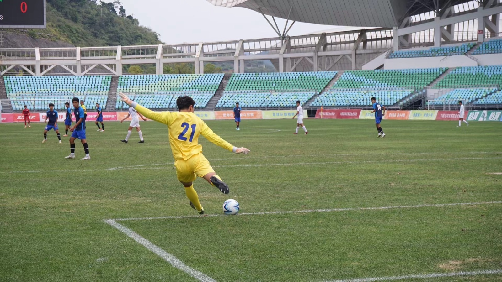
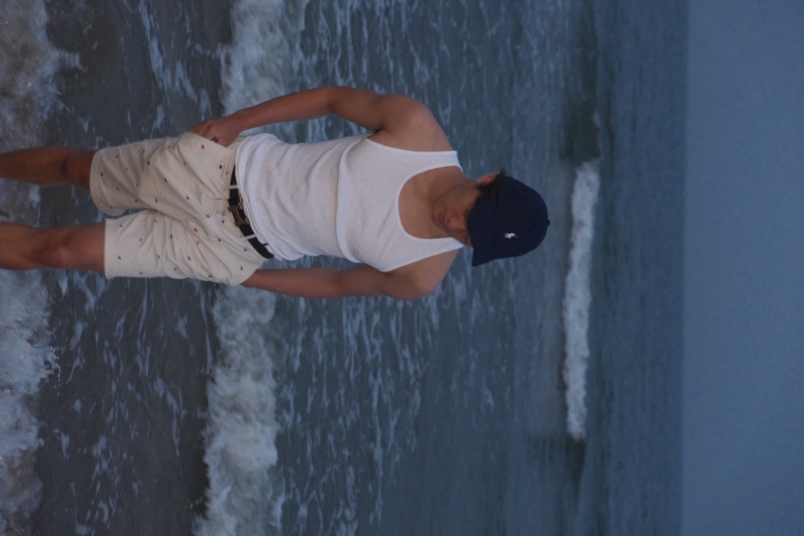
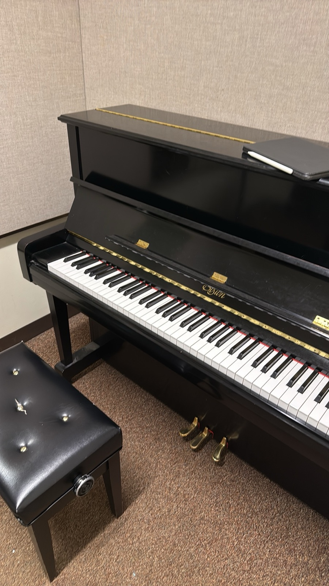
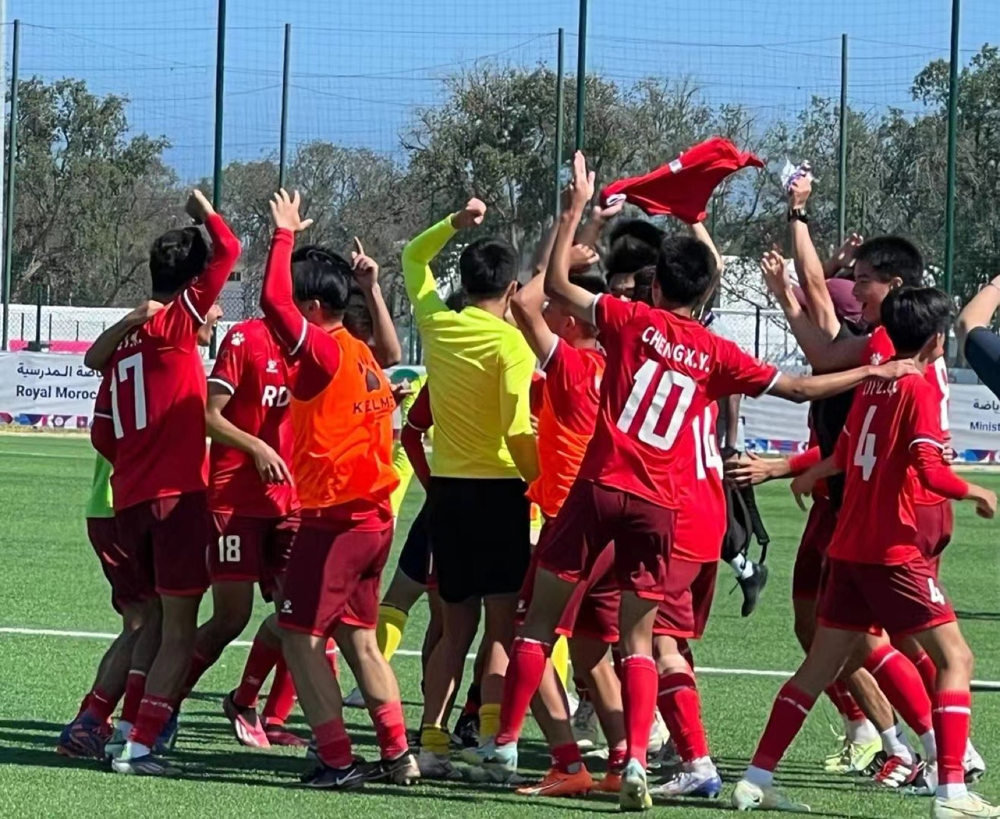
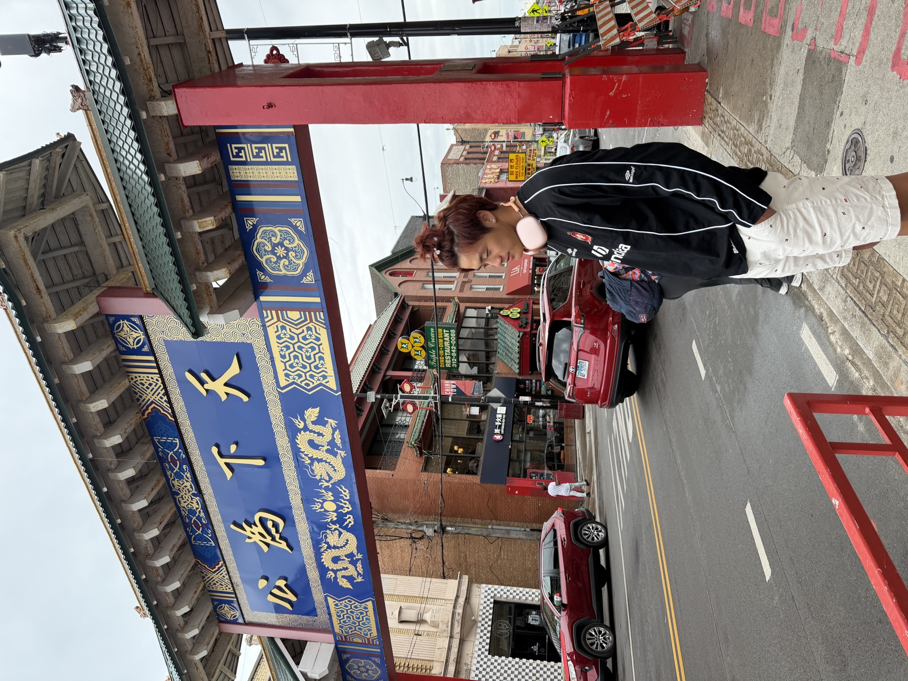
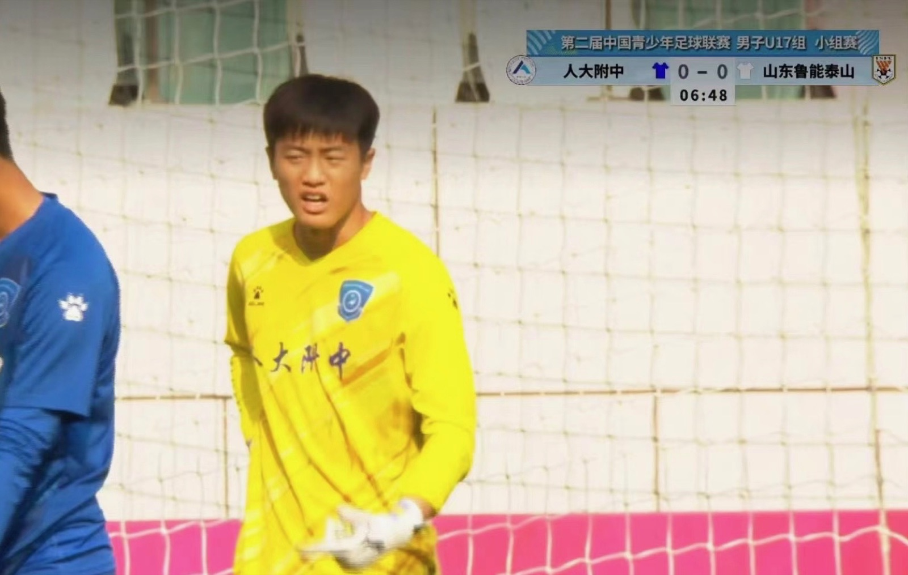
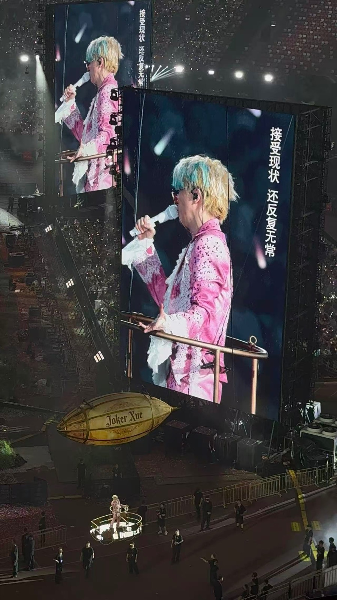

Tian Yu
I study kinesiology and cell biology at the University of Minnesota, and I spend most of my week in the van Berlo Lab at the Lillehei Heart Institute, working on how the heart grows and whether it can repair itself.
Before Minnesota I was a goalkeeper in Beijing. I started a soccer club when I got here, and I still play piano when I can.











